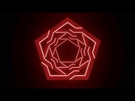
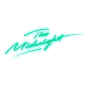
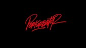
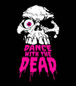
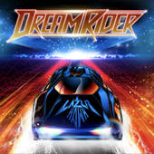
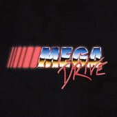
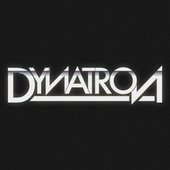
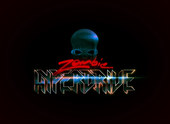
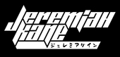
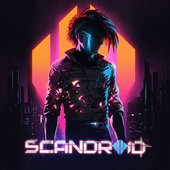

Synthwave history
The genre developed in the mid-to late 2000s through French house producers, as well as younger artists who were inspired by
the 2002 video game Grand Theft Auto: Vice City. Other reference points included composers John Carpenter, Jean-Michel Jarre,
Vangelis (especially his score for the 1982 film Blade Runner), and Tangerine Dream. Synthwave reached wider popularity after
being featured in the soundtracks of the 2011 film Drive (which included some of the genre's best-known songs), 2012 videogame
Hotline Miami, 2017 film Thor: Ragnarok and the Netflix series Stranger Things.
Some of the most popular artists
of this genre
| Logo | Artist | Country | Most popular tracks |
|---|---|---|---|
|  | Carpenter Brut | France | Roller Mobster; Turbo Killer; Maniac |
|  | The Midnight | United States | Sunset; Los Angeles; Vampires |
|  | Perturbator | France | Future Club; Miami Disco; Humans Are Such Easy Prey |
|  | Dance With the Dead | United States | Invader; Diabolic; Riot |
|  | Lazerhawk | United States | King of the Streets; Overdrive; Electric Groove |
|  | Mega Drive | United States | NARC; Acid Spit; Converter |
|  | Dynatron | Denmark | Pulse Power; Throttle Up; Intergalactic Highway |
|  | Zombie Hyperdrive | Germany | Red Eyes; Interstellar; Citadel |
|  | JEREMIAH KANE | Poland | Vampirevania; Never Back Down; Miami Fever |
|  | Scandroid | United States | Neo-Tokyo - Dance With The Dead Remix; Shout; The Force Theme |